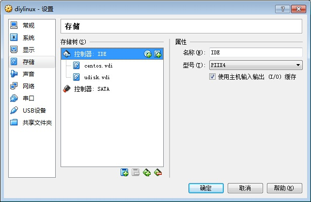
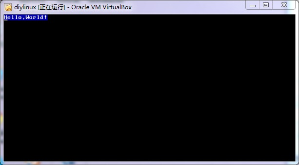

本文将要讲述自制x86操作系统的第一步——在裸机上运行helloworld。由于篇幅较长，本文将分为若干个阶段。
=====================阶段一：显示原理=======================
要编写一个helloworld程序往往是学习各种新的技术的第一步。在往常的学习中，不管是什么编程语言，都是直接提供了类似于print这样的输出语句，直接调用一下即可。然而，这些函数，都是需要函数库支持的，而函数库最终要依赖于操作系统提供的系统调用，最终操作系统操作硬件，来显示出“hello,world!”字样。
当需要自制操作系统时，由于你的程序直接运行在硬件之上，是没有操作系统支持的，更没有函数库支持。此时，要显示一些信息，只能自己操作硬件来完成。
在现代的计算机体系下，CPU与硬件（尤其是块设备）的交互方式往往是内存地址映射，即程序能够通过对某个内存地址读写数据的方式，对某个硬件进行读写。比如在x86下，CPU与显示器的交互过程中，显卡被映射到了内存的0xb8000（注意是20位）处开始的16KB。往0xb8000这段内存写入内容，就能立即显示在屏幕上，是不是感觉很棒？！
在显示器的文本模式下（就是说显示器只能显示字符），屏幕有80行，每行25列，即80*25个字符。每个字符都占用2个字节，第一个字节是ascii码，第二个字节是颜色值。即第2n字节是第n个字符的ascii码，而第2n+1字节是第n个字符的颜色值。颜色值的高4位表示背景颜色，而低4位表示字体颜色：
| 背景颜色 | 字体颜色 |
|---|---|
| 0=黑色 | 8=灰色 |
| 1=蓝色 | 9=淡蓝色 |
| 2=绿色 | A=淡绿色 |
| 3=浅绿色 | B=淡浅绿色 |
| 4=红色 | C=淡红色 |
| 5=紫色 | D=淡紫色 |
| 6=黄色 | E=淡黄色 |
| 7=白色 | F=亮白色 |
这样一算，屏幕只占用80*25*2=4000字节，但是显示缓冲区有16KB，剩下这么做什么？其实显示缓冲区将每4096字节称作一个“页”，默认情况下，屏幕显示第0页的内容。你完全可以在任意一页上写内容，并命令显示器显示该页。
=======================阶段二：x86体系结构=======================
介绍完显示原理，那么要完成本阶段的任务——显示一个字符——应该并没有什么理论上的障碍了。至于如何编写一个能够在裸机上直接运行的程序，你可能还会有各种疑问。
首页要弄清的一个问题是：x86在上电之后，BIOS会把硬盘的前512字节原封不动地复制到内存的0x7c00处，然后检查内存的0x7dfe处（也就是从0x7c00开始的第510字节，从0开始计数）开始的两个字节（第510字节和第511字节）组成数字是否是0xaa55（注意小端模式，即第510字节是0x55，第511字节是0xaa）。如果是，那么BIOS认定前510字节是一段可执行的程序，于是jump到内存地址的0x7c00处，开始执行这段代码。所以我们写的代码，必须小于等于510字节，并且如果有jump指令，要链接到0x7c00的位置（即让链接器知道，这段代码执行时会被放到0x7c00处，要相应调整各个label的绝对位置，这样才能正确使用jump指令）。
第二个要弄清的问题是：x86在上电后，CPU是在实模式下运行的，实模式的特点就是，操作数是16位的，而且访问的内存地址都是物理内存地址。但是，地址总线的宽度却又是20位，即最大寻址!M。那么x86是如何使用16位寄存器来访问20位地址的？这是x86的历史遗留问题，说来全是辛酸泪。我不会讲的太细，仅仅说明接下来的程序中需要用到的内容。x86将1M的内存分为很多段，比如代码段、数据段、附加段。每一个段都对应一个寄存器，该寄存器里的值就是这个段的首地址。最终的读写地址是段寄存器中的值(16位)左移4位以后加上偏移量（也是16位），这样结果略大于20位，就可以覆盖1M的地址空间了。例如当CPU要去取下一条指令时，就把CS寄存器（代码段寄存器）中的值左移4位，然后与IP寄存器（指令指针寄存器，某些地方叫做PC寄存器，即指令计数寄存器，这两者是同一个东西）相加，得到下一个指令地址。所以一开始就必须设置好要用的段寄存器。
==================阶段三：编写代码，显示一个字符’A’===================
为了方便测试，本文一如既然地使用VitrualBox虚拟机。如果还没有配置过CenOS 6，请参考《从零开始构建linux（一）——编译linux内核》开头关于CentOS虚拟机的配置。
在设置中，为CentOS新增一个存储设备（我选择32MB，其实只要大于512字节即可），并调整存储器顺序如下（设置->存储->控制器IDE）：

运行CentOS，新建一个myos文件夹并进入：
mkdir myos cd myos
使用vi新建文件boot.asm：
vi boot.asm
输入如下内容并且保存：
org 0x7c00 mov ax,0xb800 mov es,ax mov byte[es:0],0x41 mov byte[es:1],0x1f hlt
我来逐行解释这段代码：
org 0x7c00
告诉链接器要程序将被放到内存0x7c00处运行，要正确处理各种标签；
mov ax,0xb800 mov es,ax
把常数0xb800送入es寄存器中。由于x86中不能直接把常数送入段寄存器，所以必须通过ax通用寄存器来中转一下。此时es已经指向了显示缓存了；
mov byte[es:0],0x41 mov byte[es:1],0x1f
把0xb8000的内存位置的字节赋值0x41，把0xb8001的内存位置的字节赋值0x1f。使用byte伪操作是为了强调是字节，否则将被当做双字（Double byte，16位）。
hlt
即停机指令（halt缩写），该指令会让计算机挂起，于是画面就会定格，让我们好好欣赏我们的成果。
这段代码其实就是在0xb8000的位置写入0x41（即字符’A’），并在0xb8001的位置写入0x1f（查询刚才的颜色表，得知是蓝色背景+白色文字）。所以程序运行后，应该在屏幕最左上角显示出一个蓝底白字的’A’。
接下来需要编译和链接。这里编译用到了nasm。如果电脑上没有的话，使用如下命令安装：
yum install nasm
然后编译链接：
nasm boot.asm -fbin -o boot
选项-f bin告诉nasm编译成Plain Binary格式，即没有任何格式的格式。这种格式直接把整个文件复制到内存指定位置就能直接运行。换句话说，它就是一个内存映像。
此时，生成的boot就是我们需要的程序了。
=====================阶段四：将boot写入磁盘引导区==================
这个boot程序，不能双击运行，因为一方面它是Plain Binary格式，而linux要求应用程序是ELF格式，另一方面，linux不允许应用程序直接操纵硬件。所以我们必须把这个程序写入磁盘的前510字节，并且把第510字节和第511字节（从0计数）分别置为0x55和0xaa。
linux没有什么现成的工具能够做这一点。好在这件事很容易自己完成，所以我写了一个C程序来完成，顺便清晰地展示一下其中的原理。
在myos目录下使用vi新建mkimg.c：
vi mkimg.c
输入如下内容后保存退出：
#include <stdio.h>
#include <fcntl.h>
int main()
{
int t_input=open("boot",O_RDONLY);
if(t_input<0)
{
perror("Cannot open 'boot'");
return -1;
}
unsigned char t_block[512];
if(read(t_input,t_block,510)<0)
{
perror("Cannot read from 'boot'");
return -1;
}
close(t_input);
t_block[510]=0x55;
t_block[511]=0xaa;
int t_output=open("/dev/sdb",O_WRONLY);
if(t_output<0)
{
perror("Cannot open '/dev/sdb'");
return -1;
}
if(write(t_output,t_block,512)<0)
{
perror("Cannot write to '/dev/sdb'");
return -1;
}
close(t_output);
}
代码很简单，就是把boot读入，然后把第510字节置为0x55，把第511字节置为0xaa，然后把这512字节写入/dev/sdb中。
编译、链接、运行：
gcc mkimg.c -o mkimg ./mkimg
至此，只差重启运行了！
======================阶段五：重启运行=========================
先让CentOS关机：
init 0
然后在设置里面调整磁盘顺序，将udisk设置为第一IDE控制器主通道；或者索性暂时将centos.vdi移除掉：

然后启动：

与预期的一致！
如果你显示的画面上，出了蓝底白字的‘A’以后，还有一些杂色，不用担心，这是一种随机现象，与计算机上次运行情况有关系。
=====================阶段六：显示“Hello,world!”==================
既然我们已经能够显示一个字符了，那么显示一串字符就不是什么问题了吧，无非就是多一层循环罢了。
org 0x7c00 mov ax,cs mov ds,ax mov ax,0xb800 mov es,ax mov bx,string mov si,0 mov cx,12 display: mov al,[cs:bx] mov ah,0x1f mov [es:si],ax inc bx add si,2 loop display hlt string: db "Hello,World!"
我再来逐一解释一下代码：
org 0x7c00
告诉链接器要程序将被放到内存0x7c00处运行，要正确处理各种标签（比如display和string）；
mov ax,cs mov ds,ax
把代码段寄存器cs里的值复制到数据段寄存器ds中。由于x86中不能直接在段寄存器之间传送值，所以必须通过ax通用寄存器来中转一下。此时ds也指向了代码段（因为本程序直接把字符串放在代码段了，即代码段和数据段合用了）；这里需要特别注意一下：用nasm编译Plain Binary格式的程序时，各种段寄存器中，只有cs是被自动初始化的，其他的寄存器中存储的都可能是垃圾值。所以唯一可以作为基准的也就只有cs寄存器中的地址。因此，在写bootloader时，只能把数据段和代码段混在一起了。
mov ax,0xb800 mov es,ax
把常数0xb800送入es寄存器中。由于x86中不能直接把常数送入段寄存器，所以必须通过ax通用寄存器来中转一下。此时es已经指向了显示缓存了；
mov bx,string mov si,0 mov cx,12
把字符串的首地址放入bx寄存器中，把常数0放入si中，并把cx寄存器设置为12。ds:bx指向下一个显示的字符，es:si指向下一个显卡地址，而cx作为循环计数，表示还有多少个字符待显示。
display: mov al,[ds:bx] mov ah,0x1f mov [es:si],ax inc bx add si,2 loop display
先把ds:bx指向的字符送入al中（al就是ax寄存器的低8位），再把常数0x1f（表示蓝底白字的颜色）送入ah中（ah就是ax寄存器的高8位），最后把ax的值送到es:si指向的地址，也就是相应的显卡地址。这里注意一个技巧，就是分别给al和ax赋值，然后组成ax一并送入显存中。这样做的好处就是所需的执行时间更少，代码效率更高，不过需要注意大端小端的问题。由于x86是小端架构，所以低8位的al会被送入es:si+0中，而高8位的ah会被送入es:si+1中。
每送入一个字符和颜色，就被bx加一，指向下一个字符，并把si加2，指向下一个显存位置。最后使用loop指令跳回display出重新循环。那么问题就来了，什么时候能够跳出循环？我们一开始设置了cx=12作为循环计数，而loop指令会先把cx减一，如果cx大于零，那么继续循环，否则跳出。所以总共进行了12次循环，也就是显示12个字符（就是”Hello,World!”的字符数）。
hlt
即停机指令（halt缩写），该指令会让计算机挂起，于是画面就会定格，让我们好好欣赏我们的成果。
string: db "Hello,World!"
把字符串string的定义放在最后。
用nasm编译链接，再用自己写的mkimg写入U盘（可以参考阶段三和阶段四），重启（可以参考阶段五）。
运行结果：
